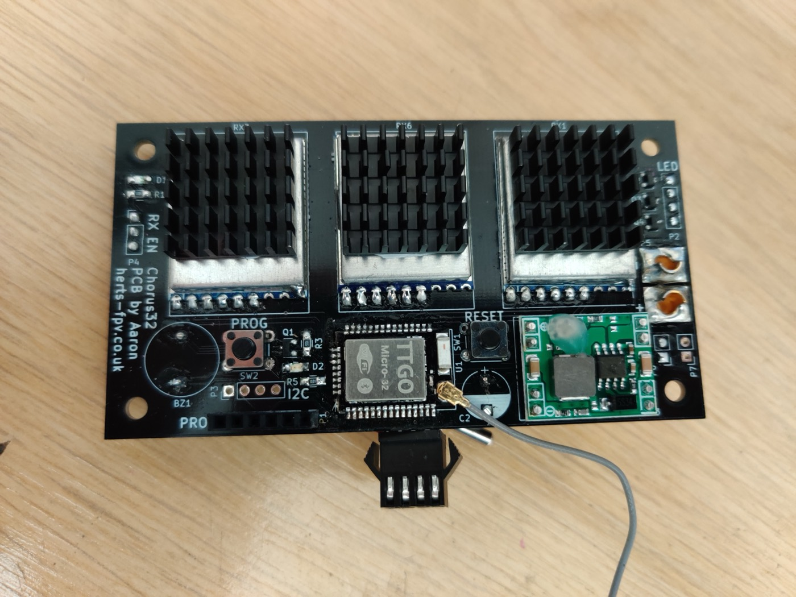
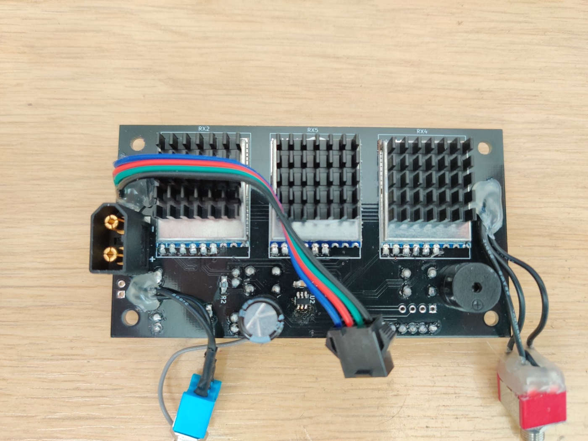
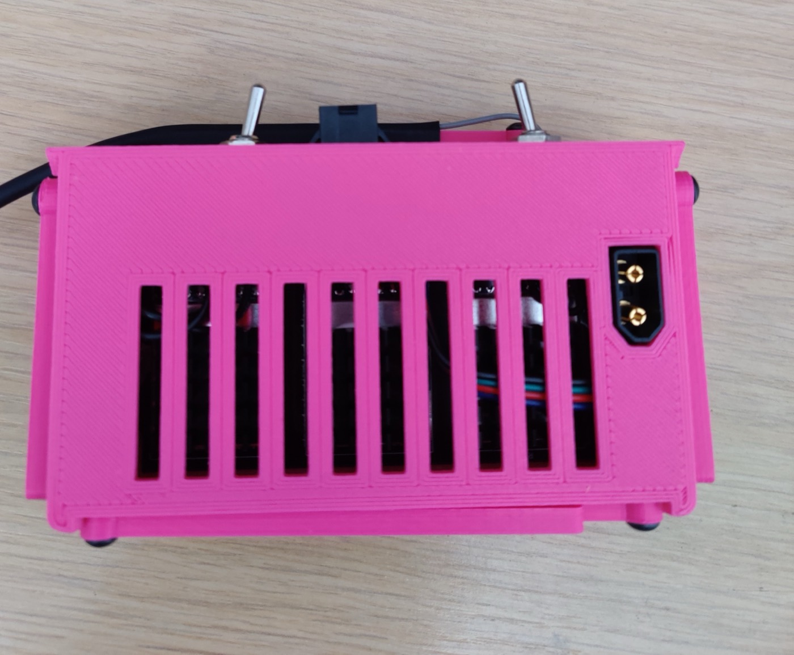
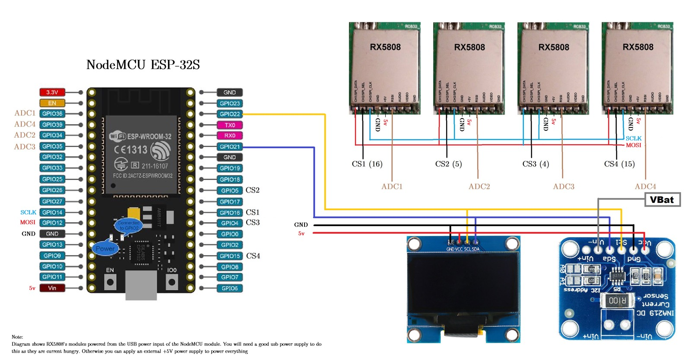
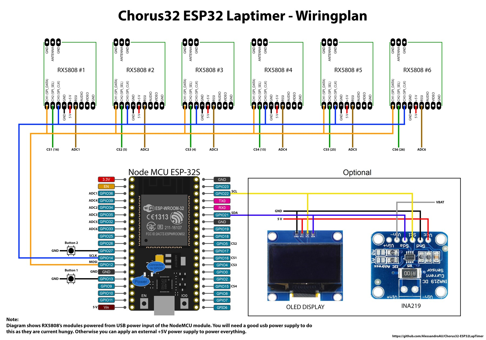
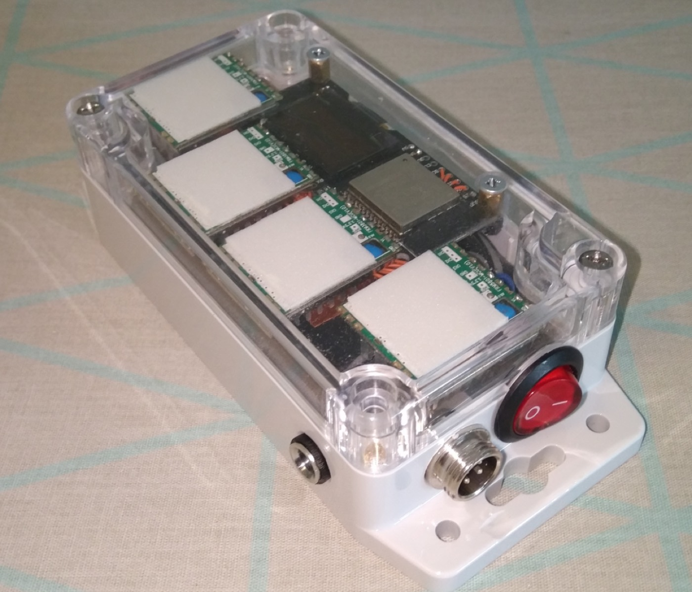
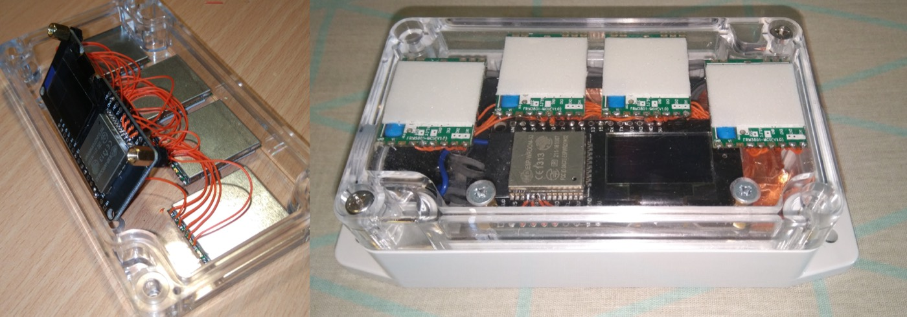

One PCB, one ESP32, and one RX5808 receiver per pilot you want to time. Everything here is through the PCB — there is no breadboard version.
In Aaron Smith's words: if you can't solder well, this is not the lap timer for you. You need to drag-solder or use paste and a heat gun. The ESP32 module and the analogue switch are both fine-pitch parts.
Two families of board exist for this project. The firmware here is built and released for the first one.
| Board | Processor | Notes |
|---|---|---|
| Aaron Smith PCB V2 recommended |
LilyGO TTGO Micro-32 |
Smaller board, external antenna, per-module power switching, on-board
power monitoring for all six nodes with no extra modules. This is the
board the released binaries target
(BOARD_MICRO32).
|
| Jye Smith V1 | Full-size ESP32 dev board |
Tested, but the INA219 Vin+ and Vin- pads are
reversed. Do not solder those pins — use patch wires. Also check
your OLED's pin order; both variants are sold.
|
| Jye Smith V2 | Full-size ESP32 dev board | Adds a beeper and LEDs. Marked untested by its author. Source on EasyEDA. |
Gerbers for the Jye Smith boards are in Downloads. The Aaron Smith board can be ordered directly from its PCBWay shared project.


For the Aaron Smith PCB V2. You do not need all six receivers — fit as many as you want to time, starting at RX1.
| Part | Ref | Use |
|---|---|---|
| ESP Micro 32 (LilyGO TTGO Micro-32 V2.0) | U1 | The processor |
| RX5808 ×1–6 | RX1–6 | One video receiver per pilot |
| MP1584 buck module | U3 | Board power supply |
| XT60 | P5 | Power connector |
| 10k 0805 resistor | R2 | ESP32 enable pull-up |
| Push button ×2 | SW1–2 | Reset and prog |
| 2.54mm header, 1×6 | P1 | Programming header |
| 2.54mm pin header | — | To attach the power module |
| FT232RL FTDI serial adapter, 3.3V/5V | — | Used once, to flash the board |
| The PCB | — | Allow 2–3 weeks from China Post |
| Part | Ref | Use |
|---|---|---|
| Buzzer | BZ1 | Beeping. Off by default in firmware 3.0.0. |
| NLAS4599DTT1G analogue switch | U2 | Switch to read battery voltage |
| AO3400 or similar NMOS SOT-23 ×4 | Q1–Q4 | Buzzer and LED control |
| 470µF 25V electrolytic (≤13.5mm tall) | C2 | Bulk storage |
| 100nF 0805 | C1 | Decoupling |
| 0805 LED ×2 | D1, D2 | Power and status |
| 10k, 47k, 1.8k, 1k 0805 resistors | R3, R5, R7, R8, R12 | Buzzer pull-down, LED resistors, voltage divider |
| 2.4GHz u.FL whip antenna | — | External antenna, worth having |
| DPDT ON-OFF-ON switch | — | Selects how many receivers are powered |
| 2-position switch | — | Main power |
| 4-pin JST SM male + female | — | LED connector |
| Heatsinks ×6 + thermal adhesive | — | Extends RX5808 life. Fit them. |
The full BOM with purchase links lives in
pcb/AaronSmith/PCB
V2/bom.md.
Adjust it on the bench, then hot-glue over the potentiometer so it cannot drift later. Attach it with the 2.54mm header pins.
Tack one corner of the ESP32 and check the pin alignment carefully before committing — do not rush this. Tack the opposite corner, then drag. A fat tip helps; a 4mm chisel is a good size.
Check every pin and reflow anything doubtful. Flux is your friend.
Solder BZ1 and C2 on the opposite side of the PCB from the one the silkscreen shows, and observe the polarity.
RX5808 modules run hot and die of it. Thermal adhesive and a heatsink on each one is cheap insurance.

These cover the original full-size build. They are still the clearest picture of how the receivers, the ESP32 and the power section relate, even if your board routes it for you.


If you have a printer, there is a printable Chorus32 box on Thingiverse. Check the dimensions against your own board before you start it — the two PCB families on this page are different sizes, and a six-receiver build is taller than a three.
The builds shown below instead use an off-the-shelf sealed enclosure with cutouts for the antenna, the power connector and the switch — a clear lid is handy because the OLED and the status LED are both worth being able to see.


Drop the STL or STEP into pcb/ and
open an
issue — it will get linked from
Downloads.
With the board built and powered, it has no firmware on it yet. Flashing the timer →